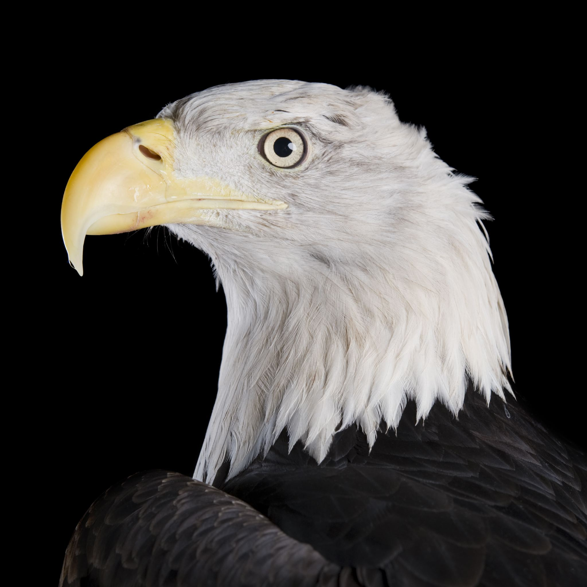
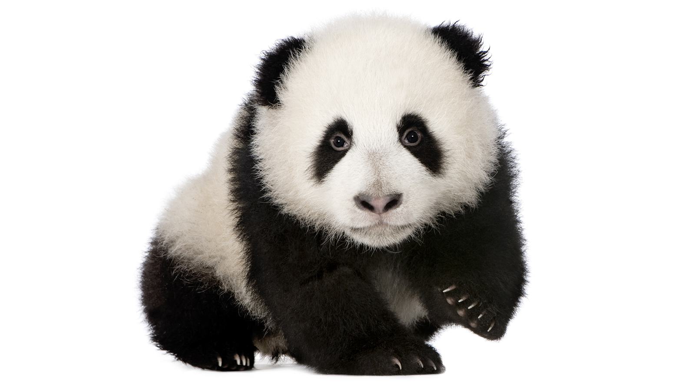
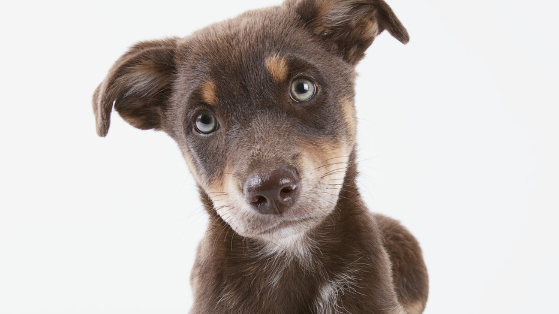
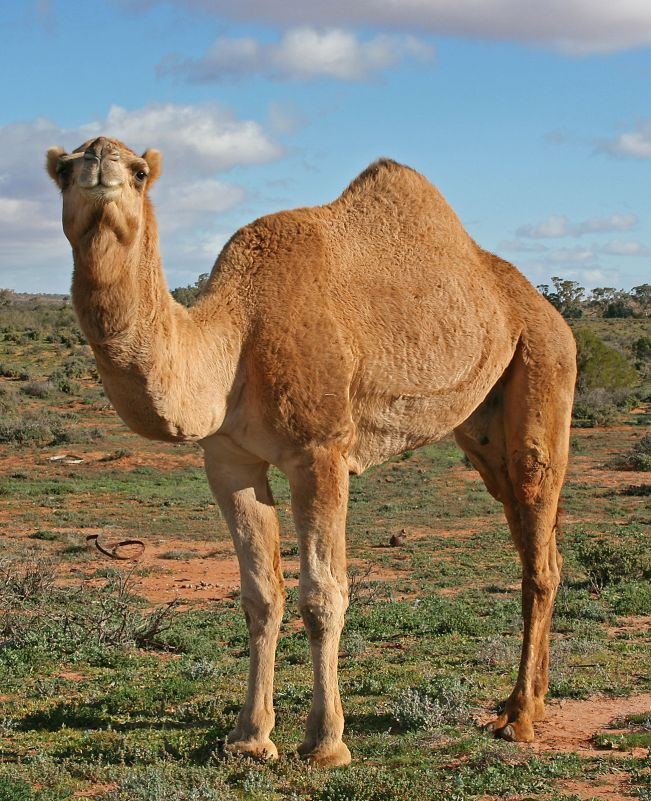

Lew afrykański(Panthera leo) – mięsożerny gatunek ssaka lądowego z rodziny kotowatych, drugi po tygrysie – co do wielkości – wśród czterech ryczących wielkich kotów.

Niedźwiedź brunatny (Ursus arctos) – gatunek drapieżnego ssaka z rodziny niedźwiedziowatych. Zamieszkuje Azję, Europę Północną i Amerykę Północną. Niezagrożony wyginięciem.

Orzel - gatunek dużego ptaka drapieżnego z rodziny jastrzębiowatych (Accipitridae)

Panda wielka, niedźwiedź bambusowy (Ailuropoda melanoleuca) – gatunek drapieżnego ssaka z rodziny niedźwiedziowatych (Ursidae).

Pies domowy(Canis lupus familiaris) – udomowiona forma wilka szarego, ssaka drapieżnego z rodziny psowatych (Canidae), uznawana przez niektórych za podgatunek wilka, a przez innych za odrębny gatunek

Wielbłąd (Camelus) – rodzaj dużych ssaków z rodziny wielbłądowatych. Fizjologicznie przystosowane do życia w warunkach suchego i gorącego klimatu, są w wielu krajach wykorzystywane jako zwierzęta użytkowe.

Wiewiórka pospolita (Sciurus vulgaris) – gatunek gryzonia z rodziny wiewiórkowatych (Sciuridae)

Tygrys (Panthera tigris) – gatunek dużego, drapieżnego ssaka łożyskowego z rodziny kotowatych (Felidae), największy z żyjących współcześnie czterech wielkich, ryczących kotów z rodzaju Panthera,